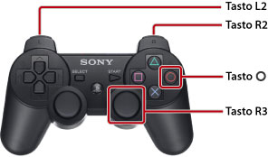

Informazioni su questa guida
Questa guida contiene informazioni correlate all'utilizzo del software del sistema PS3™. Per informazioni sulle funzioni hardware e la sicurezza del prodotto, consultare la documentazione in dotazione con il sistema.
Note sulla visualizzazione della guida
Si consiglia di visualizzare la guida alle seguenti condizioni:
- Abilitare JavaScript nel browser. Se JavaScript è disabilitato per il browser utilizzato, è possibile che la guida non venga visualizzata correttamente o non venga visualizzata affatto.
- Quando si visualizza la guida su un PC, utilizzare Microsoft Internet Explorer 6.0 o una versione successiva.
Esplorazione della guida con il sistema PS3™
Utilizzare le seguenti funzioni di base quando la guida viene visualizzata con il  (Browser per Internet) del sistema PS3™.
(Browser per Internet) del sistema PS3™.
| Tasti direzionali | Spostano il puntatore a un collegamento. |
|---|---|
Tasto  |
Apre il collegamento. |
| Levetta destra | Scorre in qualsiasi direzione. |
| Tasto L1 | Torna alla pagina precedente. |
È possibile utilizzare il seguente metodo per visualizzare lo zoom.

| Premere il tasto R3 (levetta destra) senza rilasciarlo | Utilizza visualizzazione zoom. / Annulla visualizzazione zoom. |
|---|---|
| Tenere premuto il tasto L2 / il tasto R2 durante lo zoom | Ingrandisci visualizzazione. / Riduci visualizzazione. |
Tenere premuto il tasto  durante lo zoom durante lo zoom |
Annulla visualizzazione zoom. |
Spiegazione di riferimenti ai tasti presenti nella guida
I tasti del sistema PS3™ utilizzati per immettere e cancellare le voci variano in base alla regione e al prodotto. Per convenzione, le versioni inglese e di altre lingue europee di questa guida utilizzano per immettere una voce e per cancellare una voce, mentre le altre versioni di lingua utilizzano per l'immissione e per la cancellazione.
Stampa della guida
È possibile stampare la guida con un PC. La seguente procedura consente di stampare contemporaneamente pagine multiple.
1. |
Utilizzare Microsoft Windows Internet Explorer per visualizzare la sezione [Indice del manuale] di questa guida. |
|---|---|
2. |
Nel menu File di Internet Explorer selezionare [Stampa]. |
3. |
Nella scheda [Opzioni], selezionare la casella di controllo [Stampa tutti i documenti collegati] per stampare la guida. |